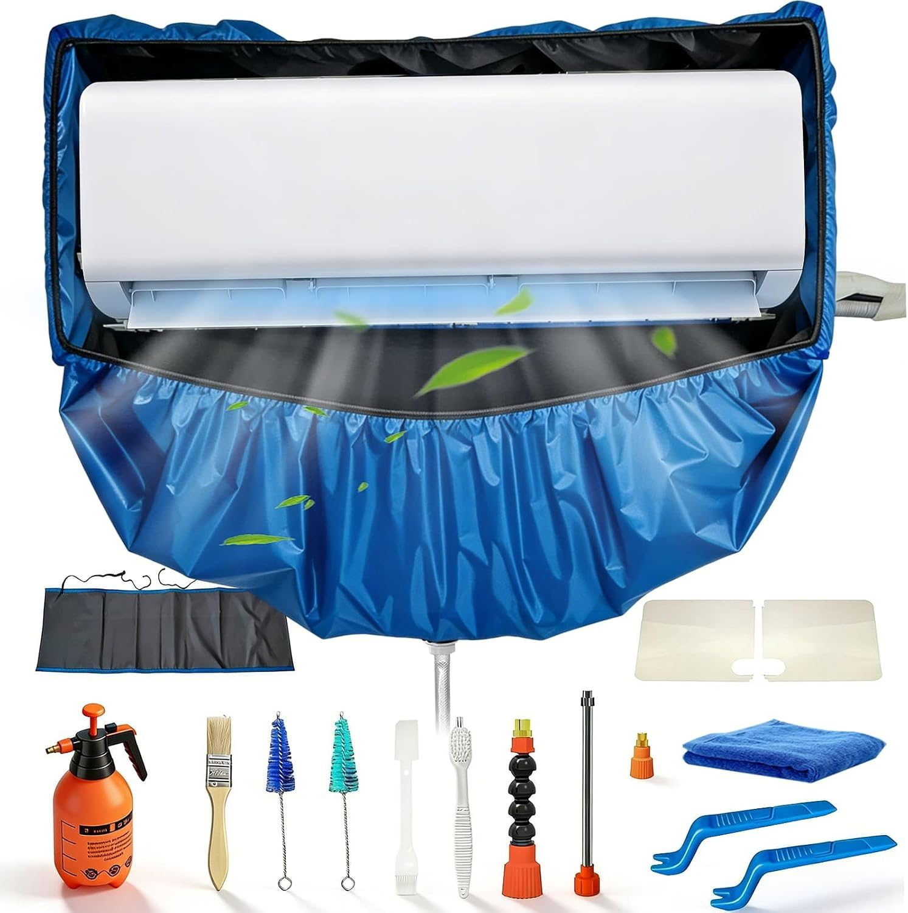

KIKEPILM
kit pulizia climatizzatore split, kit per pulizia condizionatori con telo pulizia condizionatore e pareti laterali rinforzate (Blu scuro, Tipo Z)
66,40 €
Prezzo KIKEPILM, IVA inclusa
| Marca | KIKEPILM |
| Modello (ASIN) | B0H4B9Y965 |
| Colore | Blu Scuro |
| Taglia | Tipo Z |
| Prezzo | 66,40 € |
| Valuta | EUR |
Acquisto, spedizione e reso avvengono tramite Amazon.
Informazioni su questo articolo
- 1.Struttura rinforzata con doppio pannello laterale: questo kit pulizia condizionatore è dotato di due supporti laterali rinforzati che rendono l’installazione molto più semplice e garantiscono una maggiore stabilità durante la pulizia condizionatore. Il materiale impermeabile protegge pareti e superfici ed è ideale per l’uso domestico
- 2.Installazione facile, senza attrezzi e più stabile: grazie al doppio supporto sui lati, il telo pulizia condizionatore si monta rapidamente e resta ben fermo durante l’uso. È perfetto come kit per pulizia condizionatori e come soluzione pratica per la pulizia condizionatore casa o per la cura di ogni climatizzatore
- 3.Soluzione completa per split: questo kit pulizia climatizzatore split e kit pulizia split condizionatori include un grande sacco raccoglitore d’acqua, utile come sacchetto pulizia condizionatore. È ideale per il lavaggio climatizzatore split, anche su impianti come climatizzatore dual split, e funziona perfettamente come telo per pulizia split condizionatore
- 4.Pulizia profonda e migliori prestazioni: con accessori dedicati, questo kit lavaggio condizionatore aiuta a rimuovere lo sporco in profondità, migliorando flusso d’aria, efficienza energetica e durata del prodotto. Per questo è una scelta affidabile anche come kit lavaggio condizionatori e accessorio per la pulizia del climatizzatore.
- 5.Comodo da usare e facile da riporre: oltre a facilitare il montaggio, i pannelli laterali rinforzati aiutano a mantenere la forma del telo e a riporlo più comodamente dopo l’uso. Questo kit è perfetto per manutenzione regolare, pulizia, lavaggio annuale e come pratico kit pulizia climatizzatore o kit pulizia condizionatore casa